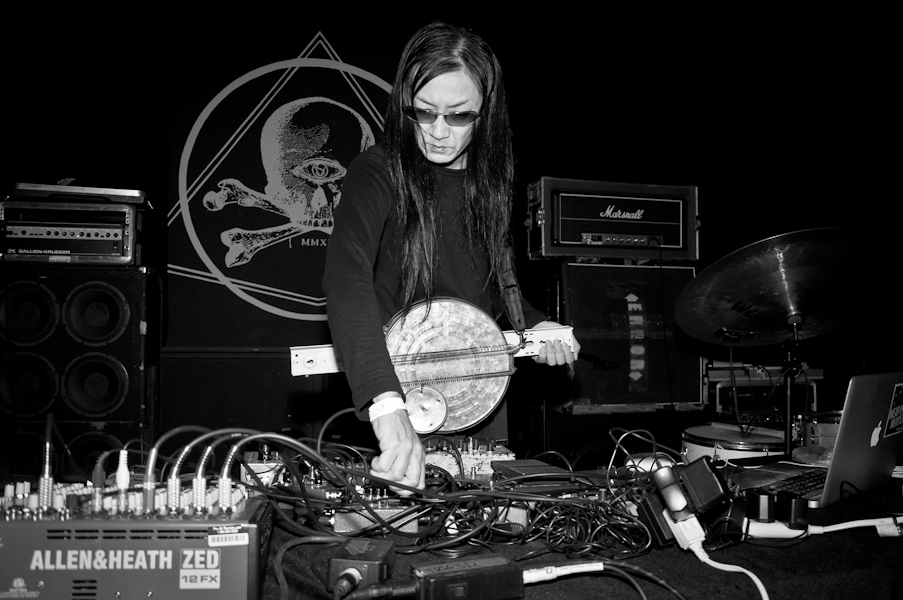
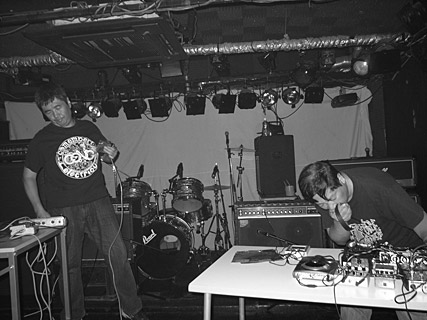
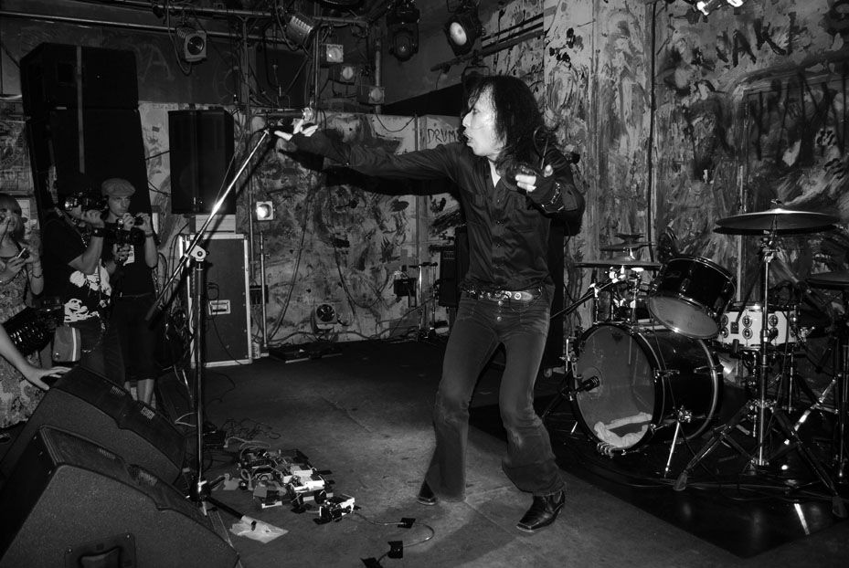
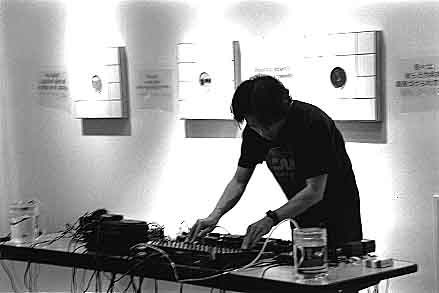

Merzbow
It's impossible to talk about noise music from Japan or noise music in general without mentioning Masami Akita aka Merzbow. Taking his name from the German Dadaist Kurt Schwitters' "Merzbau" installations, Akita-san is widely accepted as the progenitor of the harsh Japan sound. His original recordings under the Merzbow moniker date all the way back to the late 1970's which preceded most the classic Japanese noise sound by nearly a decade.
Suggested Recording: Pulse Demon 1996 Release Entertainment

Incapacitants
If one can say there is a core "spirit" to the noise movement in Japan, Incapacitants embody it. Originally started in 1981 as a solo vehicle for Toshiji Mikawa but didn't really crystalize until Fumio Kosakai joined in the early 90's. The Incapacitants' aesthetic is dynamic, energetic and FUN, something that is often overlook in the hyper-serious avant music world.
Suggested Recording: No Progress (Dedicated To Takuya "Synapse" Sakaguchi) 1994 Alchemy Records

Masonna
Probably the purest as far as economy of sonics, Maso Yamazaki aka Masonna almost exclusively produces his output with a microphone and a couple of stompbox pedals. Most of his "compositions" are less than a minute long suggesting a strong tie the aesthetics of 80's American hardcore.
Suggested Recording: Mademoiselle Anne Sanglante Ou Notre Nymphomanie Auréolé 1993 Alchemy Records

Aube
While the music of Nakajima Akifumi aka Aube is often referred to as "minimalist" the vast and complex soundscapes he crafted are anything but. Often starting with simple field recordings gathered froma particular object (ie a body of water, computer hum etc.) Aube would then process and craft the source material into dense alien soundfields. He passed in 2013.
Suggested Recording: Aqua Syndrome 1997 Manifold Records